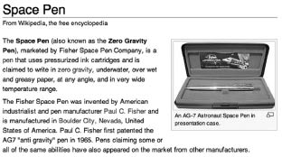

Soğuk Savaş yıllarında uzaya gitme yarışı devam ederken en büyük rekabet birbirine gol atmak isteyen ABD ile SSCB arasında yaşanıyordu. Ardı ardına geliştirilen yeni teknolojiler ve uzay çalışmaları, savaşa dair her unsuru taşıyan ama konvansiyonel bir savaş olmayan bu çatışma üstün hale gelebilmek içindi.
Bu yarışta insanlık iki farklı ülkeden çok, iki farklı anlayışla karşılaştı. Amerika geniş bir vizyonla çok büyük paralar harcayarak çeşitli teknolojiler geliştirerek çok sayıda farklı buluşun da kapısını araladı. Örneğin NASA sadece sıfır yerçekimi ortamında yazmayı sağlayan “Zero-G” adı verilen kalem ve ilgili projeleri geliştirmeye 12 milyar dolar kaynak harcadı. Aynı sorunu sadece kurşunkalem kullanarak çözen Rusya ise tamamen farklı bir anlayışa sahipti.
İnovasyon odaklı bu bakış açısı Amerika’ya birçok konuda avantaj kazandırdı. Rusya, savaş halinde bulunduğu Çeçenleri eli silahlı adamlar gönderip öldürtürken, Amerika ise sadece bilgisayar, internet yoluyla insanları örgütleyip Arap ülkelerinde rejimleri değiştirebiliyor. Rusya yıllardır Amerika’da yaşayan ajanlarının tespit edilip sınır dışı edilmesi sorunuyla karşı karşıyayken, Amerika yerinden bile kıpırdamadan Facebook sayesinde tüm dünyanın kişisel bilgileri, yaşamı ve alışkanlıkları hakkında her türlü bilgiye sahip durumda. Her detaya mükemmellikle şekil verip milyar dolarlar yardımıyla yaratılan Facebook efsanesi Amerika’nın Carnivore ve Echelon sistemleriyle tüm dünyayı izlemenin yeterince efektif olmayacağının farkına varmasıyla ortaya çıkıyor.

Wikipedia. Space Pen maddesi.
Facebook’a ilk kaydolduğumda bunu düşünmüştüm. Benden kişisel bilgilerimi isterken “Öyle ya, birini izlemek için kişisel bilgilerini kendi rızasıyla vermesini sağlamaktan daha kolay ne olabilir ki?” diye tereddüt yaşamıştım.
Tereddüt yaşamadan kullanıcıların bilgilerini toplayan Facebook’un kurucuları CIA’in adeta bir çiftliği durumundaki Harvard Üniversitesi’nde okuyan üç öğrenci. Kısa sürede irili ufaklı yatırım alan projenin ilk ciddi finansmanı olan 13 milyon doları Accel Partners firmasından, James Breyer diye biri sağlıyor. Accel’in yöneticisi James Breyer aynı zamanda bir CIA firması olan In-Q-Tel firmasının yöneticisi. CIA 1999 yılında In-Q-Tel firmasını kurduğunda firmanın ana faaliyet konuları arasında veri ambarı hizmetleri, veri madenciliği, veri sınıflandırması, veri depolama teknikleri gibi tam da Facebook üzerinde gerçekleştirilen istihbarat ve veri işleme tekniklerinin yer alıyor olması tesadüf değil.
Facebook’un ana yatırımcısının birlikte çalıştığı insanlar da ilgi çekici. Dr. Anita Jones, James Breyer ile çalışmadan önce Amerika Savunma Bakanlığı’nda yöneticilik yapmış biri. Aynı zamanda DARPA isimli devlet kuruluşunun da danışmanı. DARPA, Pentagon tarafından kurulan ve Amerika Savunma Bakanlığı’na bağlı teknoloji projeleri üreten bir birim. İnternet’i yaratan teknolojileri de geliştiren yine aynı birim.
Sabırla ve milyarlarca dolar harcanarak şekillendirilen bu geniş organizasyon şemasında Facebook projesinden sorumlu departmanı bulmak ise pek zor değil. DARPA’nın IAO departmanının görev tanımı şöyle: “IAO’nun misyonu internet iletişimi, kredi kartı alışveriş detayları, hava yolu biletleri, otomobil kiralama kayıtları, hastane kayıtları, eğitim geçmişi, ehliyet bilgileri, vergi ödemeleri ile diğer sınıflandırılmış bilgileri gerektiği şekilde toplamak, saklamak ve işlemektir”.
Halen her şeyin terlik giyen Yahudi bir çocuğun parlak fikriyle başladığını düşünüyorsanız, buradan bakınca iyi niyetiniz oldukça sempatik gözüküyor.
Social Network filminde de yer alan bir diyaloğu hatırlıyorum. Facebook projesinin başlarında Mark Zuckerberg bir arkadaşına “Harvard’dan biriyle ilgili bilgi istiyorsan bana sorman yeterli” diyor. Arkadaşı “Nasıl yani?” dediğinde Mark’ın cevabı şöyle: “Kendileri verdi, sebebini bilmiyorum ama bana güvendi aptallar!”